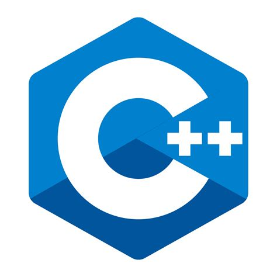

Добро пожаловать в электронный учебный курс по дициплине "Технологии программирования". Руководитель проекта старший преподаватель кафедры "ПОКС" Дыйканова Назира Батыркановна. Сайт является электронной системой поддержки процесса изучения учебной дисциплины "Технологии программирования" для студентов, " технической специальности" Электронный учебный курс содержит теоретические и практические учебные материалы, методические указания и систему контроля знаний.